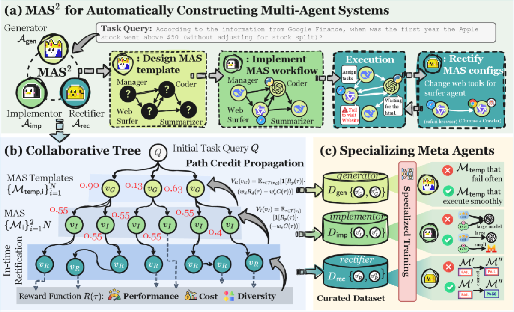

Why it matters왜 중요한가
The hard part of multi-agent design is not building a team once — it is keeping it alive when the real world breaks it.
멀티에이전트 설계의 진짜 어려움은 팀을 한 번 짜는 게 아니라, 현실이 그 팀을 망가뜨릴 때 살아남게 하는 것이다.
Automated MAS design has matured from hand-written specs (AutoGen, MetaGPT) to learned topologies (GPTSwarm) to fully synthesized pipelines (ADAS, AFlow, MaAS). But almost all of them generate once and deploy: the configuration is frozen at launch, so an API failure, a malformed tool output, or a runaway cost budget simply sinks the run. MAS² treats the communication protocol, role roster, tool set, and backbone assignment as things another agent system should author and rewrite on the fly — re-framing MAS construction itself as a learned, self-correcting agentic task rather than a one-shot search.
자동 MAS 설계는 수작업 명세(AutoGen, MetaGPT) → 학습된 토폴로지(GPTSwarm) → 완전 합성 파이프라인(ADAS, AFlow, MaAS)으로 발전했다. 그러나 거의 모두 한 번 생성 후 배포 — 설정이 시작 시점에 고정되므로 API 실패, 잘못된 도구 출력, 폭주하는 비용이 그대로 실행을 침몰시킨다. MAS²는 통신 프로토콜·역할 구성·도구 세트·백본 배정 자체를 또 다른 에이전트 시스템이 실시간으로 작성·재작성해야 할 대상으로 본다 — MAS 구축을 단발성 탐색이 아니라 학습된 자기교정 에이전트 과제로 재정의한다.

By the numbers핵심 숫자
(+4.1 over AFlow)HumanEval 통과율
(AFlow 대비 +4.1)
(+8.5 over DyLAN)HotpotQA 정확도
(DyLAN 대비 +8.5)
at >25× lower costBamboogle SC(GPT-4o) 대비 점수
비용은 25× 이상 저렴
Generator·Implementor·Rectifier메타 에이전트
Generator·Implementor·Rectifier
across 4 domains벤치마크
4개 도메인
(from 32.8% vanilla)미학습 백본 투입 시 Bamboogle
(바닐라 32.8%에서)
Results — competence at a Pareto-optimal cost결과 — 파레토 최적 비용에서의 성능
| Benchmark | MAS² | Baseline | Δ |
|---|---|---|---|
| HumanEval | 97.0 | 92.9 (AFlow) | +4.1 |
| HotpotQA | 89.3 | 80.8 (DyLAN) | +8.5 |
| Multi-hop search (avg) | 78.5 | 75.7 (ScoreFlow) | +2.8 |
| MATH | 71.3 | 67.3 (LLM-Debate) | +4.0 |
| MATH | 71.3 | 64.4 (ScoreFlow) | +6.9 |
In one diagram한 장의 그림
The core idea: recursive self-generation, trained by a tree핵심 아이디어: 트리로 학습하는 재귀적 자기생성
Generator · Implementor · Rectifier
A target MAS is formalized as ⟨R, P, T, B⟩: roles, communication protocols, tools, and backbone assignment. The Generator emits an abstract template ⟨R,P,T⟩ (architecture, no models); the Implementor binds each role to a concrete LLM from a candidate pool; the Rectifier fires when a budget/error trigger A_R(s_t)=1 and edits the live config.
대상 MAS를 ⟨R, P, T, B⟩로 형식화한다: 역할, 통신 프로토콜, 도구, 백본 배정. Generator가 추상 템플릿 ⟨R,P,T⟩(모델 없는 아키텍처)를 내고, Implementor가 각 역할을 후보 풀의 구체 LLM에 묶고, Rectifier는 예산·오류 트리거 A_R(s_t)=1일 때 발동해 실행 중 설정을 수정한다.
Collaborative Tree Optimization (CTO)
Per query, a decision tree branches Generator→Implementor→Rectifier choices. A cost-sensitive reward gives failed paths 0 and rewards success inversely to normalized LLM cost; Monte-Carlo path-credit propagates a value V(v) to every node. Value-scaled preference pairs (Δ V as weight) then specialize each meta-agent — DPO-style, but weighted by how much the choice actually mattered.
질의마다 Generator→Implementor→Rectifier 선택을 분기하는 결정 트리를 만든다. 비용 민감 보상은 실패 경로에 0, 성공에는 정규화 LLM 비용에 반비례해 보상하고, 몬테카를로 경로 크레딧으로 모든 노드에 값 V(v)를 전파한다. 이후 값-스케일 선호쌍(Δ V를 가중치로)으로 각 메타 에이전트를 특화한다 — DPO 방식이되 선택의 실제 중요도로 가중.
How it works어떻게 작동하나
- Generate a template템플릿 생성From the task query, the Generator architects an abstract workflow ⟨R, P, T⟩ — roles, message protocols, and tools — without committing to any model yet.작업 질의로부터 Generator가 추상 워크플로 ⟨R, P, T⟩(역할·메시지 프로토콜·도구)를 설계한다 — 아직 어떤 모델도 확정하지 않는다.
- Implement backbones백본 구현The Implementor maps each role to a concrete LLM from the candidate pool — small/cheap models for easy roles, strong models for hard reasoning — yielding an executable MAS.Implementor가 각 역할을 후보 풀의 구체 LLM에 매핑한다 — 쉬운 역할엔 작고 저렴한 모델, 어려운 추론엔 강한 모델 — 실행 가능한 MAS가 된다.
- Execute and monitor실행·감시The MAS runs; the Rectifier watches resource use C(s_t) and outcomes O(s_t). A budget overrun or a failure (search/code/validation error) flips the trigger.MAS가 실행되고, Rectifier가 자원 사용 C(s_t)과 결과 O(s_t)를 감시한다. 예산 초과나 실패(검색·코드·검증 오류)가 트리거를 켠다.
- Rectify and resume수정·재개On trigger, the Rectifier edits the config — local (re-assign a tool, change a prompt) or global (rewrite workflow code) — and execution continues from the updated state.트리거 시 Rectifier가 설정을 수정한다 — 로컬(도구 재배정·프롬프트 변경) 또는 글로벌(워크플로 코드 재작성) — 갱신된 상태에서 실행을 이어간다.
What to take away그래서, 가져갈 것
Self-rectification is the real win. Ablations show removing the Rectifier costs ~3.5 pts on MBPP and ~6.6 on MATH — proof that runtime repair, not just smarter initial design, drives robustness.
자기수정이 진짜 핵심. 어블레이션에서 Rectifier 제거 시 MBPP ~3.5점, MATH ~6.6점 하락 — 더 똑똑한 초기 설계가 아니라 실행 중 수리가 견고함을 만든다는 증거.
Communication protocol becomes a learned output. Roles, message structure, tools, and model routing are all emitted by a trained meta-team rather than hand-wired — agentic design as a policy.
통신 프로토콜이 학습 산출물이 된다. 역할·메시지 구조·도구·모델 라우팅을 손으로 배선하지 않고 학습된 메타 팀이 출력한다 — 정책으로서의 에이전트 설계.
Future-proof routing. It plugs in unseen backbones (Qwen3-Coder, GPT-5-Mini, Gemini-2.5-Pro) at inference with no retraining, lifting Bamboogle from 32.8% to 82.5%.
미래 대비 라우팅. 재학습 없이 미학습 백본(Qwen3-Coder, GPT-5-Mini, Gemini-2.5-Pro)을 추론 시 끼워 Bamboogle을 32.8%→82.5%로 끌어올린다.
Cost as a first-class reward. CTO rewards cheaper successful paths, so easy tasks get lean teams and small models — landing on a new cost-performance Pareto front.
비용을 일급 보상으로. CTO가 더 저렴한 성공 경로에 보상해, 쉬운 작업엔 가벼운 팀·작은 모델이 붙는다 — 새 비용-성능 파레토 프런티어.